data(CO2)
w1b1 <- CO2 |> filter(Treatment == "chilled") |> select(-Treatment)ANOVA
Applied Multiple Regression/Correlation Analysis for the Behavioral by Jacob Cohen, Patricia Cohen, Stephen G. West, Leona S. AikenSciences
R in Action
w1b1 |> print() Plant Type conc uptake
1 Qc1 Quebec 95 14.2
2 Qc1 Quebec 175 24.1
3 Qc1 Quebec 250 30.3
4 Qc1 Quebec 350 34.6
5 Qc1 Quebec 500 32.5
6 Qc1 Quebec 675 35.4
7 Qc1 Quebec 1000 38.7
8 Qc2 Quebec 95 9.3
9 Qc2 Quebec 175 27.3
10 Qc2 Quebec 250 35.0
11 Qc2 Quebec 350 38.8
12 Qc2 Quebec 500 38.6
13 Qc2 Quebec 675 37.5
14 Qc2 Quebec 1000 42.4
15 Qc3 Quebec 95 15.1
16 Qc3 Quebec 175 21.0
17 Qc3 Quebec 250 38.1
18 Qc3 Quebec 350 34.0
19 Qc3 Quebec 500 38.9
20 Qc3 Quebec 675 39.6
21 Qc3 Quebec 1000 41.4
22 Mc1 Mississippi 95 10.5
23 Mc1 Mississippi 175 14.9
24 Mc1 Mississippi 250 18.1
25 Mc1 Mississippi 350 18.9
26 Mc1 Mississippi 500 19.5
27 Mc1 Mississippi 675 22.2
28 Mc1 Mississippi 1000 21.9
29 Mc2 Mississippi 95 7.7
30 Mc2 Mississippi 175 11.4
31 Mc2 Mississippi 250 12.3
32 Mc2 Mississippi 350 13.0
33 Mc2 Mississippi 500 12.5
34 Mc2 Mississippi 675 13.7
35 Mc2 Mississippi 1000 14.4
36 Mc3 Mississippi 95 10.6
37 Mc3 Mississippi 175 18.0
38 Mc3 Mississippi 250 17.9
39 Mc3 Mississippi 350 17.9
40 Mc3 Mississippi 500 17.9
41 Mc3 Mississippi 675 18.9
42 Mc3 Mississippi 1000 19.9w1b1 <- w1b1 |>
mutate(
conc = factor(conc),
Plant = factor(Plant, ordered = FALSE)
)w1b1 |> pivot_wider(names_from = "conc", values_from = "uptake")| Plant | Type | 95 | 175 | 250 | 350 | 500 | 675 | 1000 |
|---|---|---|---|---|---|---|---|---|
| <fct> | <fct> | <dbl> | <dbl> | <dbl> | <dbl> | <dbl> | <dbl> | <dbl> |
| Qc1 | Quebec | 14.2 | 24.1 | 30.3 | 34.6 | 32.5 | 35.4 | 38.7 |
| Qc2 | Quebec | 9.3 | 27.3 | 35.0 | 38.8 | 38.6 | 37.5 | 42.4 |
| Qc3 | Quebec | 15.1 | 21.0 | 38.1 | 34.0 | 38.9 | 39.6 | 41.4 |
| Mc1 | Mississippi | 10.5 | 14.9 | 18.1 | 18.9 | 19.5 | 22.2 | 21.9 |
| Mc2 | Mississippi | 7.7 | 11.4 | 12.3 | 13.0 | 12.5 | 13.7 | 14.4 |
| Mc3 | Mississippi | 10.6 | 18.0 | 17.9 | 17.9 | 17.9 | 18.9 | 19.9 |
fit <- aov(uptake ~ conc*Type + Error(Plant/conc), w1b1)
summary(fit)
Error: Plant
Df Sum Sq Mean Sq F value Pr(>F)
Type 1 2667.2 2667.2 60.41 0.00148 **
Residuals 4 176.6 44.1
---
Signif. codes: 0 '***' 0.001 '**' 0.01 '*' 0.05 '.' 0.1 ' ' 1
Error: Plant:conc
Df Sum Sq Mean Sq F value Pr(>F)
conc 6 1472.4 245.40 52.52 1.26e-12 ***
conc:Type 6 428.8 71.47 15.30 3.75e-07 ***
Residuals 24 112.1 4.67
---
Signif. codes: 0 '***' 0.001 '**' 0.01 '*' 0.05 '.' 0.1 ' ' 1library(ez)
w1b1_aov <- ezANOVA(
data = w1b1,
dv = uptake,
wid = Plant,
# between = Type,
within = conc,
# detailed = TRUE,
type = 3,
# return_aov = TRUE
)
w1b1_aov
$ANOVA =
| Effect | DFn | DFd | F | p | p<.05 | ges | |
|---|---|---|---|---|---|---|---|
| <chr> | <dbl> | <dbl> | <dbl> | <dbl> | <chr> | <dbl> | |
| 2 | conc | 6 | 30 | 13.6088 | 2.09137e-07 | * | 0.3031357 |
lmer(uptake ~ conc + (1 | Plant), data = w1b1)Linear mixed model fit by REML ['lmerMod']
Formula: uptake ~ conc + (1 | Plant)
Data: w1b1
REML criterion at convergence: 230.3504
Random effects:
Groups Name Std.Dev.
Plant (Intercept) 8.870
Residual 4.246
Number of obs: 42, groups: Plant, 6
Fixed Effects:
(Intercept) conc175 conc250 conc350 conc500 conc675
11.233 8.217 14.050 14.967 15.417 16.650
conc1000
18.550 w1b1 |>
ggplot(aes(x = conc, y = uptake, fill = Type)) +
geom_boxplot()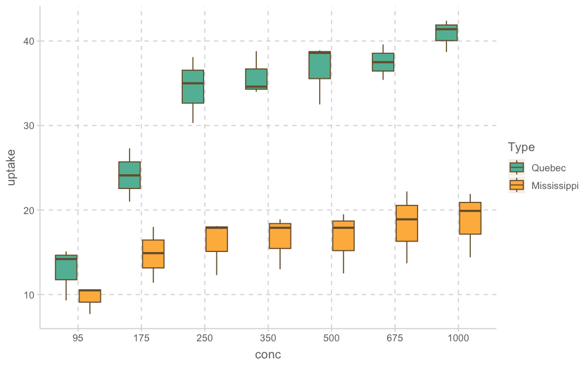
w1b1| Plant | Type | conc | uptake | |
|---|---|---|---|---|
| <ord> | <fct> | <fct> | <dbl> | |
| 1 | Qc1 | Quebec | 95 | 14.2 |
| 2 | Qc1 | Quebec | 175 | 24.1 |
| 3 | Qc1 | Quebec | 250 | 30.3 |
| 4 | Qc1 | Quebec | 350 | 34.6 |
| ... | ... | ... | ... | ... |
| 39 | Mc3 | Mississippi | 350 | 17.9 |
| 40 | Mc3 | Mississippi | 500 | 17.9 |
| 41 | Mc3 | Mississippi | 675 | 18.9 |
| 42 | Mc3 | Mississippi | 1000 | 19.9 |
w1b1 |>
ggplot(aes(x = conc, y = uptake, color = Type)) +
geom_jitter(width = .2) +
facet_wrap(~Plant)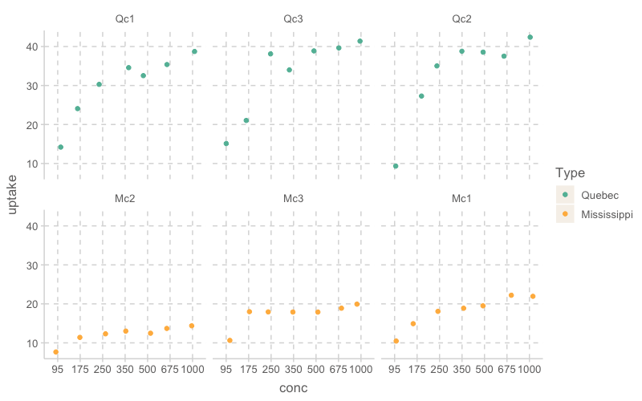
w1b1 |>
ggplot(aes(x = Plant, y = uptake)) +
geom_jitter(width = .1)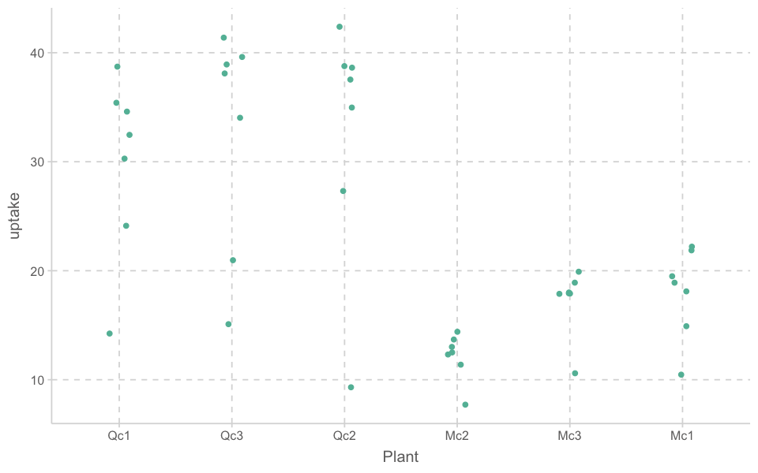
blog
https://yury-zablotski.netlify.app/post/rma/#introduction
# load(url("http://coltekin.net/cagri/R/data/newborn.rda"))
newborn <- read.csv("data/newborn.csv")
newborn| participant | language | rate |
|---|---|---|
| <int> | <chr> | <dbl> |
| 1 | native | 29.01 |
| 1 | foreign | 20.06 |
| 2 | native | 29.49 |
| 2 | foreign | 31.60 |
| ... | ... | ... |
| 29 | native | 28.62 |
| 29 | foreign | 20.28 |
| 30 | native | 16.56 |
| 30 | foreign | 14.68 |
ggplot(newborn, aes(language, rate))+
geom_violin()+
geom_dotplot(binaxis='y', stackdir='center', dotsize=.5)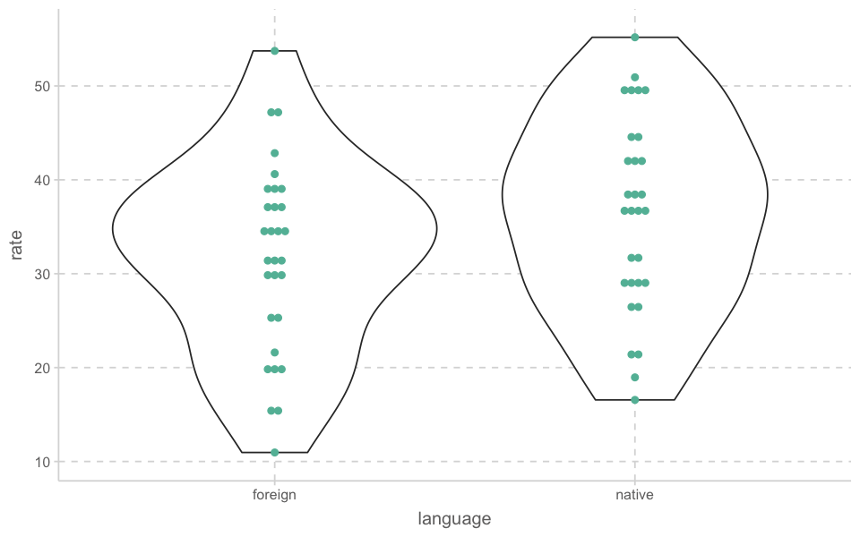
newborn| participant | language | rate |
|---|---|---|
| <fct> | <fct> | <dbl> |
| 1 | native | 29.01 |
| 1 | foreign | 20.06 |
| 2 | native | 29.49 |
| 2 | foreign | 31.60 |
| ... | ... | ... |
| 29 | native | 28.62 |
| 29 | foreign | 20.28 |
| 30 | native | 16.56 |
| 30 | foreign | 14.68 |
newborn |>
ggplot(aes(x = language, y = rate, group = participant, color = as.numeric(participant))) +
geom_line() +
facet_wrap(~participant)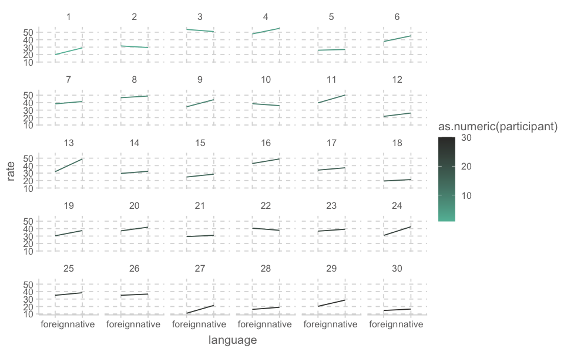
newborn_wide <- newborn |>
pivot_wider(names_from = "language", values_from = "rate") |>
mutate(diff = native - foreign)
newborn_wide |> print()# A tibble: 30 x 4
participant native foreign diff
<fct> <dbl> <dbl> <dbl>
1 1 29.0 20.1 8.95
2 2 29.5 31.6 -2.11
3 3 50.9 53.7 -2.81
4 4 55.2 47.7 7.44
5 5 26.8 25.9 0.970
6 6 45.1 37.6 7.57
# ... with 24 more rowst.test(rate ~ language, data = newborn)
Welch Two Sample t-test
data: rate by language
t = -1.7074, df = 57.994, p-value = 0.0931
alternative hypothesis: true difference in means between group foreign and group native is not equal to 0
95 percent confidence interval:
-9.8271059 0.7797726
sample estimates:
mean in group foreign mean in group native
31.84367 36.36733 summary(lm(rate ~ language, data = newborn))
Call:
lm(formula = rate ~ language, data = newborn)
Residuals:
Min 1Q Median 3Q Max
-20.8837 -7.4548 0.8927 6.5913 21.8863
Coefficients:
Estimate Std. Error t value Pr(>|t|)
(Intercept) 31.844 1.873 16.997 <2e-16 ***
languagenative 4.524 2.649 1.707 0.0931 .
---
Signif. codes: 0 '***' 0.001 '**' 0.01 '*' 0.05 '.' 0.1 ' ' 1
Residual standard error: 10.26 on 58 degrees of freedom
Multiple R-squared: 0.04786, Adjusted R-squared: 0.03144
F-statistic: 2.915 on 1 and 58 DF, p-value: 0.0931t.test(rate ~ language, data = newborn, paired = TRUE)
Paired t-test
data: rate by language
t = -5.3138, df = 29, p-value = 1.06e-05
alternative hypothesis: true mean difference is not equal to 0
95 percent confidence interval:
-6.264775 -2.782559
sample estimates:
mean difference
-4.523667 ezANOVA(data = newborn,
dv = rate,
wid = participant,,
within = language,
detailed = TRUE,
type = 3,
return_aov = TRUE)$ANOVA
Effect DFn DFd SSn SSd F p p<.05
1 (Intercept) 1 29 69791.1078 5791.737 349.4534 1.015654e-17 *
2 language 1 29 306.9534 315.251 28.2367 1.060479e-05 *
ges
1 0.91953700
2 0.04785722
$aov
Call:
aov(formula = formula(aov_formula), data = data)
Grand Mean: 34.1055
Stratum 1: participant
Terms:
Residuals
Sum of Squares 5791.737
Deg. of Freedom 29
Residual standard error: 14.13206
Stratum 2: participant:language
Terms:
language Residuals
Sum of Squares 306.9534 315.2511
Deg. of Freedom 1 29
Residual standard error: 3.297078
Estimated effects are balancedlibrary(lme4)
model_lmer <- lmer(rate ~ language + (1 | participant), data = newborn)
summary(model_lmer)Linear mixed model fit by REML ['lmerMod']
Formula: rate ~ language + (1 | participant)
Data: newborn
REML criterion at convergence: 394.2
Scaled residuals:
Min 1Q Median 3Q Max
-1.79385 -0.50665 -0.03044 0.42331 2.00234
Random effects:
Groups Name Variance Std.Dev.
participant (Intercept) 94.42 9.717
Residual 10.87 3.297
Number of obs: 60, groups: participant, 30
Fixed effects:
Estimate Std. Error t value
(Intercept) 31.8437 1.8734 16.997
languagenative 4.5237 0.8513 5.314
Correlation of Fixed Effects:
(Intr)
languagentv -0.227library(report)
report(model_lmer) |> print()We fitted a linear mixed model (estimated using REML and nloptwrap optimizer)
to predict rate with language (formula: rate ~ language). The model included
participant as random effect (formula: ~1 | participant). The model's total
explanatory power is substantial (conditional R2 = 0.90) and the part related
to the fixed effects alone (marginal R2) is of 0.05. The model's intercept,
corresponding to language = foreign, is at 31.84 (95% CI [28.09, 35.60], t(56)
= 17.00, p < .001). Within this model:
- The effect of language [native] is statistically significant and positive
(beta = 4.52, 95% CI [2.82, 6.23], t(56) = 5.31, p < .001; Std. beta = 0.43,
95% CI [0.27, 0.60])
Standardized parameters were obtained by fitting the model on a standardized
version of the dataset. 95% Confidence Intervals (CIs) and p-values were
computed using a Wald t-distribution approximation.report(model_lmer) |>
table_long() |>
print()ERROR: Error in h(simpleError(msg, call)): error in evaluating the argument 'x' in selecting a method for function 'print': could not find function "table_long"
Error in h(simpleError(msg, call)): error in evaluating the argument 'x' in selecting a method for function 'print': could not find function "table_long"
Traceback:
1. print(table_long(report(model_lmer)))
2. .handleSimpleError(function (cond)
. .Internal(C_tryCatchHelper(addr, 1L, cond)), "could not find function \"table_long\"",
. base::quote(table_long(report(model_lmer))))
3. h(simpleError(msg, call))library(broom)
library(emmeans)
emmeans(model_lmer, pairwise ~ language, adjust = "bonferroni")$emmeans
language emmean SE df lower.CL upper.CL
foreign 31.8 1.87 32.1 28.0 35.7
native 36.4 1.87 32.1 32.6 40.2
Degrees-of-freedom method: kenward-roger
Confidence level used: 0.95
$contrasts
contrast estimate SE df t.ratio p.value
foreign - native -4.52 0.851 29 -5.314 <.0001
Degrees-of-freedom method: kenward-roger # install.packages("TMB", type = "source")
plot_model(model_lmer, type = "diag")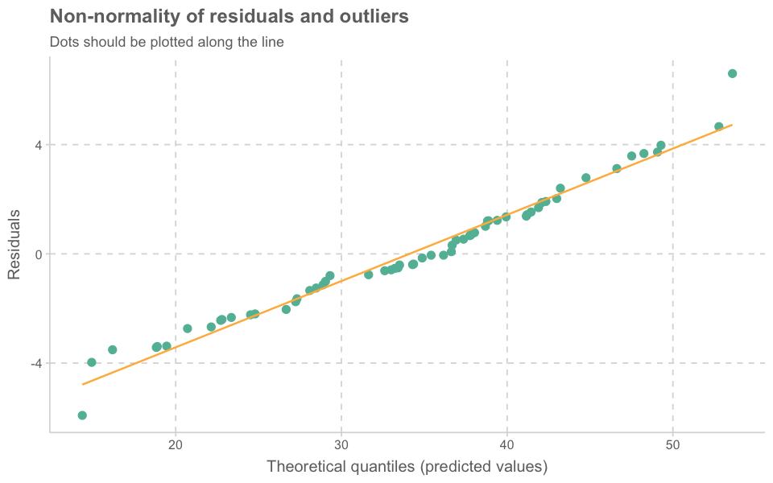
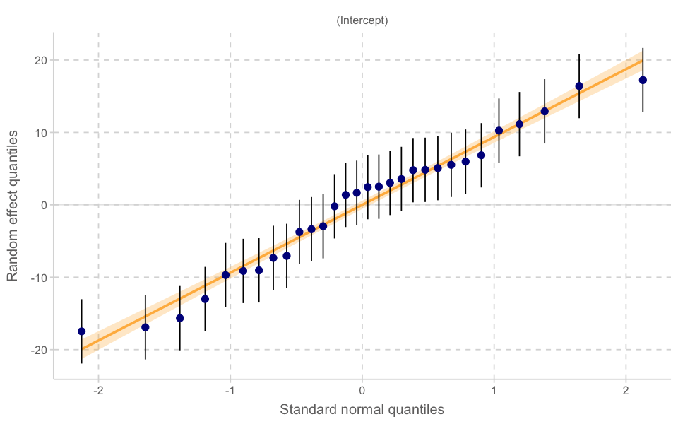
[[1]]
[[2]]
[[2]]$participant
[[3]]
[[4]]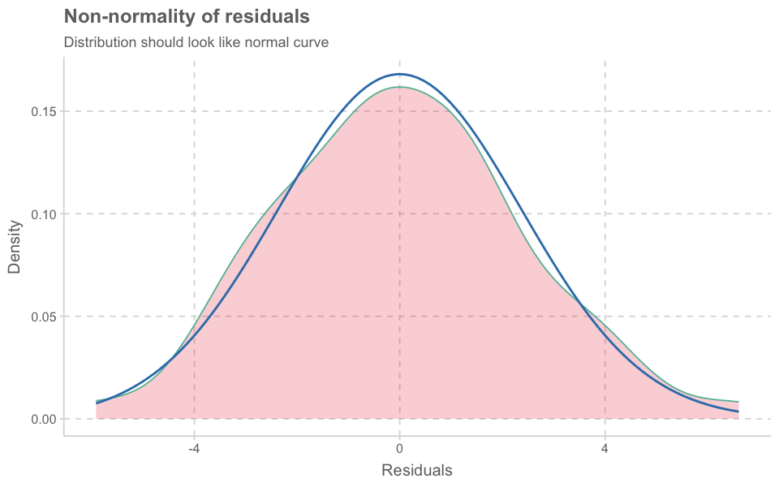
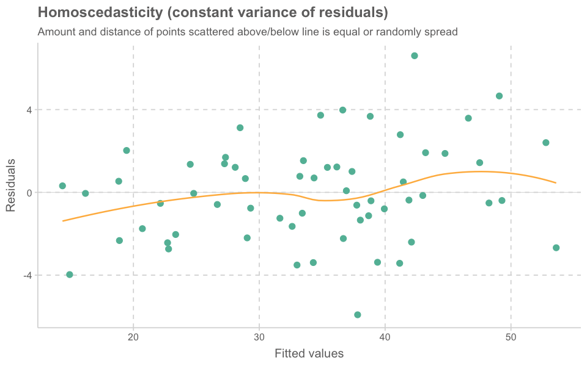
car::influencePlot(model_lmer)| StudRes | Hat | CookD | |
|---|---|---|---|
| <dbl> | <dbl> | <dbl> | |
| 1 | 0.7189496 | 0.4903583 | 0.2486654 |
| 2 | -1.1615895 | 0.4903583 | 0.6491183 |
| 25 | 2.8048223 | 0.4903583 | 3.7846806 |
| 26 | -2.5127739 | 0.4903583 | 3.0375634 |
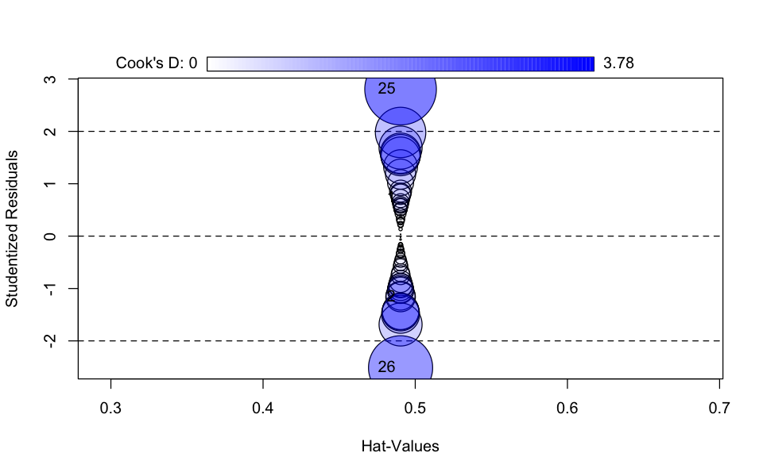
library(performance)
check_model(model_lmer)library(effects)
plot(allEffects(model_lmer))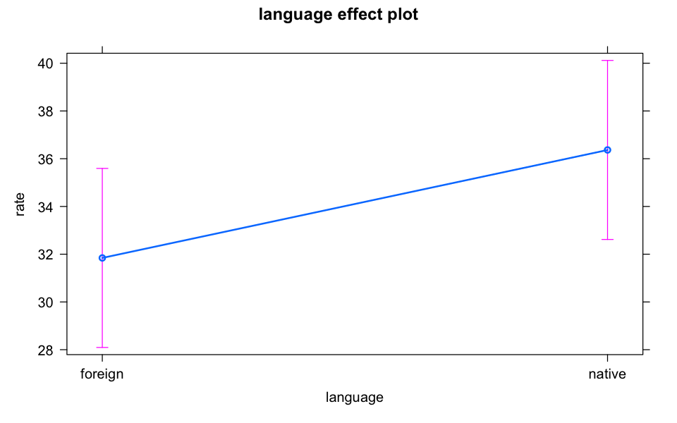
library(sjPlot)
tab_model(model_lmer, p.style = "scientific")Bilingual data
# bilingual <- read.delim("http://coltekin.net/cagri/R/data/bilingual.txt") %>%
# mutate(subj = factor(subj))
bilingual <- read_csv("data/bilingual.csv")
bilingual| subj | language | age | gender | mlu |
|---|---|---|---|---|
| <dbl> | <chr> | <chr> | <chr> | <dbl> |
| 1 | school | preschool | F | 3.059997 |
| 1 | school | firstgrade | F | 3.627408 |
| 1 | school | secondgrade | F | 2.712001 |
| 1 | home.only | preschool | F | 3.714177 |
| ... | ... | ... | ... | ... |
| 20 | school | secondgrade | M | 4.196580 |
| 20 | home.only | preschool | M | 2.723715 |
| 20 | home.only | firstgrade | M | 2.880923 |
| 20 | home.only | secondgrade | M | 3.548740 |
bilingual <- bilingual |>
mutate(
subj = factor(subj),
age = factor(age, levels = c("preschool", "firstgrade", "secondgrade")),
gender = factor(gender),
language = factor(language)
)bilingual |>
pivot_wider(names_from = "age", values_from = "mlu") |>
print(n = Inf)bilingual |>
ggplot(aes(x = age, y = mlu, group = subj, color = as.numeric(subj))) +
#geom_jitter(width = .2, aes(color = as.numeric(subj))) +
geom_line() +
facet_wrap(~gender + language)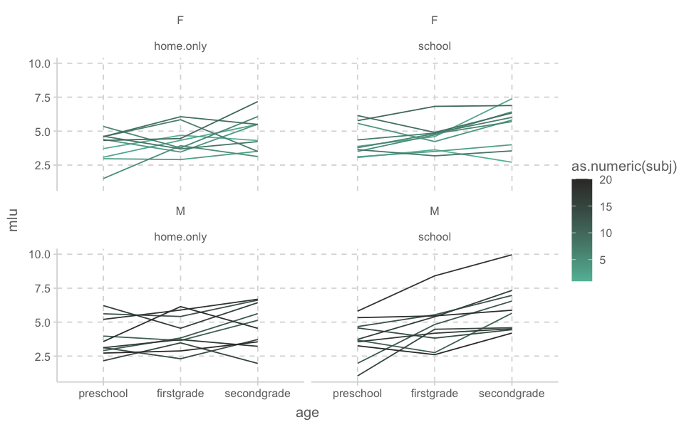
ezPlot(
data = bilingual,
dv = mlu,
wid = subj,
between = gender,
within = age,
x = age,
col = gender)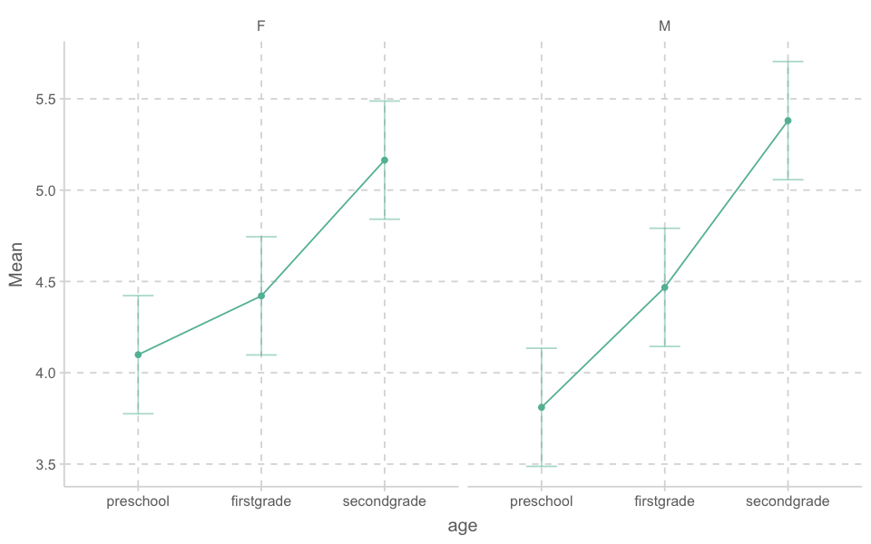
library(ez)
easy <- ezANOVA(data = bilingual,
dv = mlu,
wid = subj,
between = gender,
within = age,
detailed = TRUE,
type = 3,
return_aov = TRUE)
easy$ANOVA
Effect DFn DFd SSn SSd F p p<.05
1 (Intercept) 1 18 1.246108e+03 64.91082 3.455501e+02 3.392743e-13 *
2 gender 1 18 1.054337e-03 64.91082 2.923713e-04 9.865458e-01
3 age 2 36 1.774901e+01 18.32481 1.743440e+01 5.072873e-06 *
4 gender:age 2 36 6.591649e-01 18.32481 6.474809e-01 5.293489e-01
ges
1 9.373859e-01
2 1.266673e-05
3 1.757595e-01
4 7.857041e-03
$`Mauchly's Test for Sphericity`
Effect W p p<.05
3 age 0.9937147 0.9478173
4 gender:age 0.9937147 0.9478173
$`Sphericity Corrections`
Effect GGe p[GG] p[GG]<.05 HFe p[HF] p[HF]<.05
3 age 0.993754 5.378113e-06 * 1.116711 5.072873e-06 *
4 gender:age 0.993754 5.284531e-01 1.116711 5.293489e-01
$aov
Call:
aov(formula = formula(aov_formula), data = data)
Grand Mean: 4.557243
Stratum 1: subj
Terms:
gender Residuals
Sum of Squares 0.00105 64.91082
Deg. of Freedom 1 18
Residual standard error: 1.898988
2 out of 3 effects not estimable
Estimated effects are balanced
Stratum 2: subj:age
Terms:
age gender:age Residuals
Sum of Squares 17.749006 0.659165 18.324814
Deg. of Freedom 2 2 36
Residual standard error: 0.7134582
Estimated effects may be unbalancedeasy$ANOVA |> print(digits=2) Effect DFn DFd SSn SSd F p p<.05 ges
1 (Intercept) 1 114 2.5e+03 218 1.3e+03 3.5e-64 * 9.2e-01
2 gender 1 114 2.1e-03 218 1.1e-03 9.7e-01 9.7e-06
3 age 2 114 3.5e+01 218 9.3e+00 1.9e-04 * 1.4e-01
4 gender:age 2 114 1.3e+00 218 3.4e-01 7.1e-01 6.0e-03easy$ANOVA
Effect DFn DFd SSn SSd F p p<.05
1 (Intercept) 1 114 2.492216e+03 218.4438 1.300621e+03 3.528100e-64 *
2 gender 1 114 2.108673e-03 218.4438 1.100461e-03 9.735945e-01
3 age 2 114 3.549801e+01 218.4438 9.262735e+00 1.872895e-04 *
4 gender:age 2 114 1.318330e+00 218.4438 3.440006e-01 7.096618e-01
ges
1 9.194131e-01
2 9.653070e-06
3 1.397880e-01
4 5.998895e-03
$`Levene's Test for Homogeneity of Variance`
DFn DFd SSn SSd F p p<.05
1 5 114 5.104009 79.95702 1.455425 0.2099949
$aov
Call:
aov(formula = formula(aov_formula), data = data)
Terms:
gender age gender:age Residuals
Sum of Squares 0.00211 35.49801 1.31833 218.44377
Deg. of Freedom 1 2 2 114
Residual standard error: 1.384259
Estimated effects may be unbalancedbilingual| subj | language | age | gender | mlu |
|---|---|---|---|---|
| <fct> | <chr> | <chr> | <chr> | <dbl> |
| 1 | school | preschool | F | 3.059997 |
| 1 | school | firstgrade | F | 3.627408 |
| 1 | school | secondgrade | F | 2.712001 |
| 1 | home.only | preschool | F | 3.714177 |
| ... | ... | ... | ... | ... |
| 20 | school | secondgrade | M | 4.196580 |
| 20 | home.only | preschool | M | 2.723715 |
| 20 | home.only | firstgrade | M | 2.880923 |
| 20 | home.only | secondgrade | M | 3.548740 |
bilingual |> bilingual |>
ggplot(aes(x = age, y = mlu, fill = gender)) +
geom_boxplot()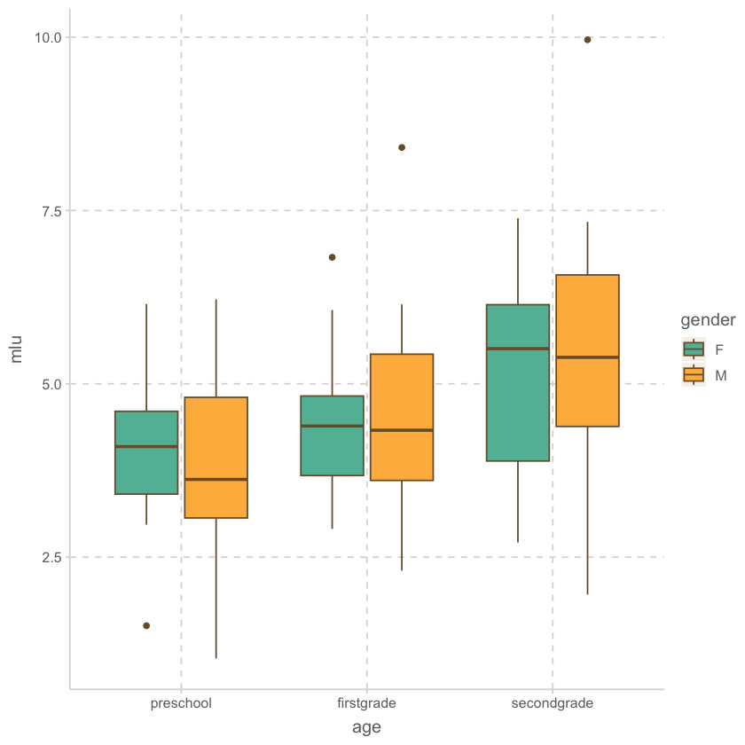
bilingual |>
ggplot(aes())Appendix MLM
OBrienKaiser <- carData::OBrienKaiser
OBrienKaiser| treatment | gender | pre.1 | pre.2 | pre.3 | pre.4 | pre.5 | post.1 | post.2 | post.3 | post.4 | post.5 | fup.1 | fup.2 | fup.3 | fup.4 | fup.5 | |
|---|---|---|---|---|---|---|---|---|---|---|---|---|---|---|---|---|---|
| <fct> | <fct> | <dbl> | <dbl> | <dbl> | <dbl> | <dbl> | <dbl> | <dbl> | <dbl> | <dbl> | <dbl> | <dbl> | <dbl> | <dbl> | <dbl> | <dbl> | |
| 1 | control | M | 1 | 2 | 4 | 2 | 1 | 3 | 2 | 5 | 3 | 2 | 2 | 3 | 2 | 4 | 4 |
| 2 | control | M | 4 | 4 | 5 | 3 | 4 | 2 | 2 | 3 | 5 | 3 | 4 | 5 | 6 | 4 | 1 |
| 3 | control | M | 5 | 6 | 5 | 7 | 7 | 4 | 5 | 7 | 5 | 4 | 7 | 6 | 9 | 7 | 6 |
| 4 | control | F | 5 | 4 | 7 | 5 | 4 | 2 | 2 | 3 | 5 | 3 | 4 | 4 | 5 | 3 | 4 |
| ... | ... | ... | ... | ... | ... | ... | ... | ... | ... | ... | ... | ... | ... | ... | ... | ... | ... |
| 13 | B | F | 5 | 5 | 6 | 8 | 6 | 4 | 6 | 6 | 8 | 6 | 7 | 7 | 8 | 10 | 8 |
| 14 | B | F | 2 | 2 | 3 | 1 | 2 | 5 | 6 | 7 | 5 | 2 | 6 | 7 | 8 | 6 | 3 |
| 15 | B | F | 2 | 2 | 3 | 4 | 4 | 6 | 6 | 7 | 9 | 7 | 7 | 7 | 8 | 6 | 7 |
| 16 | B | F | 4 | 5 | 7 | 5 | 4 | 7 | 7 | 8 | 6 | 7 | 7 | 8 | 10 | 8 | 7 |
phase <- factor(rep(c("pretest", "posttest", "followup"), c(5, 5, 5)),
levels=c("pretest", "posttest", "followup"))
hour <- ordered(rep(1:5, 3))
idata <- data.frame(phase, hour)
idata| phase | hour |
|---|---|
| <fct> | <ord> |
| pretest | 1 |
| pretest | 2 |
| pretest | 3 |
| pretest | 4 |
| ... | ... |
| followup | 2 |
| followup | 3 |
| followup | 4 |
| followup | 5 |
OBrien.long <- reshape(OBrienKaiser,
varying=c("pre.1", "pre.2", "pre.3", "pre.4", "pre.5",
"post.1", "post.2", "post.3", "post.4", "post.5",
"fup.1", "fup.2", "fup.3", "fup.4", "fup.5"),
v.names="score",
timevar="phase.hour", direction="long")
OBrien.long$phase <- ordered(
c("pre", "post", "fup")[1 + ((OBrien.long$phase.hour - 1) %/% 5)],
levels=c("pre", "post", "fup"))
OBrien.long$hour <- ordered(1 + ((OBrien.long$phase.hour - 1) %% 5))OBrien.long| treatment | gender | phase.hour | score | id | phase | hour | |
|---|---|---|---|---|---|---|---|
| <fct> | <fct> | <int> | <dbl> | <int> | <ord> | <ord> | |
| 1.1 | control | M | 1 | 1 | 1 | pre | 1 |
| 2.1 | control | M | 1 | 4 | 2 | pre | 1 |
| 3.1 | control | M | 1 | 5 | 3 | pre | 1 |
| 4.1 | control | F | 1 | 5 | 4 | pre | 1 |
| ... | ... | ... | ... | ... | ... | ... | ... |
| 13.15 | B | F | 15 | 8 | 13 | fup | 5 |
| 14.15 | B | F | 15 | 3 | 14 | fup | 5 |
| 15.15 | B | F | 15 | 7 | 15 | fup | 5 |
| 16.15 | B | F | 15 | 7 | 16 | fup | 5 |
mod.ok <- lm(cbind(pre.1, pre.2, pre.3, pre.4, pre.5,
post.1, post.2, post.3, post.4, post.5,
fup.1, fup.2, fup.3, fup.4, fup.5) ~ treatment*gender,
data=OBrienKaiser)
mod.ok
Call:
lm(formula = cbind(pre.1, pre.2, pre.3, pre.4, pre.5, post.1,
post.2, post.3, post.4, post.5, fup.1, fup.2, fup.3, fup.4,
fup.5) ~ treatment * gender, data = OBrienKaiser)
Coefficients:
pre.1 pre.2 pre.3 pre.4 pre.5
(Intercept) 3.903e+00 4.278e+00 5.431e+00 4.611e+00 4.139e+00
treatment1 1.181e-01 1.389e-01 -7.639e-02 1.806e-01 1.944e-01
treatment2 -2.292e-01 -3.333e-01 -1.458e-01 -7.083e-01 -6.667e-01
gender1 -6.528e-01 -7.778e-01 -1.806e-01 -1.111e-01 -6.389e-01
treatment1:gender1 -4.931e-01 -3.889e-01 -5.486e-01 -1.806e-01 -1.944e-01
treatment2:gender1 6.042e-01 5.833e-01 2.708e-01 7.083e-01 1.167e+00
post.1 post.2 post.3 post.4 post.5
(Intercept) 5.028e+00 5.542e+00 6.917e+00 6.361e+00 4.833e+00
treatment1 7.639e-01 8.958e-01 8.333e-01 7.222e-01 9.167e-01
treatment2 2.917e-01 1.875e-01 -2.500e-01 8.333e-02 -2.047e-17
gender1 -8.611e-01 -4.583e-01 -4.167e-01 -5.278e-01 -1.000e+00
treatment1:gender1 -6.806e-01 -6.042e-01 -3.333e-01 -5.556e-01 -5.000e-01
treatment2:gender1 9.583e-01 6.875e-01 2.500e-01 9.167e-01 1.250e+00
fup.1 fup.2 fup.3 fup.4 fup.5
(Intercept) 6.014e+00 6.153e+00 7.778e+00 6.167e+00 5.347e+00
treatment1 9.236e-01 1.035e+00 1.097e+00 9.583e-01 8.819e-01
treatment2 -6.250e-02 -6.250e-02 -1.250e-01 1.250e-01 2.292e-01
gender1 -5.972e-01 -9.028e-01 -7.778e-01 -8.333e-01 -4.306e-01
treatment1:gender1 -2.153e-01 -1.597e-01 -3.472e-01 -4.167e-02 -1.736e-01
treatment2:gender1 6.875e-01 1.187e+00 8.750e-01 1.125e+00 3.958e-01library(car)
(av.ok <- Anova(mod.ok, idata=idata, idesign=~phase*hour, type=3))
Type III Repeated Measures MANOVA Tests: Pillai test statistic
Df test stat approx F num Df den Df Pr(>F)
(Intercept) 1 0.96736 296.389 1 10 9.241e-09 ***
treatment 2 0.44075 3.940 2 10 0.0547069 .
gender 1 0.26789 3.659 1 10 0.0848003 .
treatment:gender 2 0.36350 2.855 2 10 0.1044692
phase 1 0.81363 19.645 2 9 0.0005208 ***
treatment:phase 2 0.69621 2.670 4 20 0.0621085 .
gender:phase 1 0.06614 0.319 2 9 0.7349696
treatment:gender:phase 2 0.31060 0.919 4 20 0.4721498
hour 1 0.93286 24.315 4 7 0.0003345 ***
treatment:hour 2 0.31634 0.376 8 16 0.9183275
gender:hour 1 0.33922 0.898 4 7 0.5129764
treatment:gender:hour 2 0.57022 0.798 8 16 0.6131884
phase:hour 1 0.56043 0.478 8 3 0.8202673
treatment:phase:hour 2 0.66238 0.248 16 8 0.9915531
gender:phase:hour 1 0.71151 0.925 8 3 0.5894907
treatment:gender:phase:hour 2 0.79277 0.328 16 8 0.9723693
---
Signif. codes: 0 '***' 0.001 '**' 0.01 '*' 0.05 '.' 0.1 ' ' 1